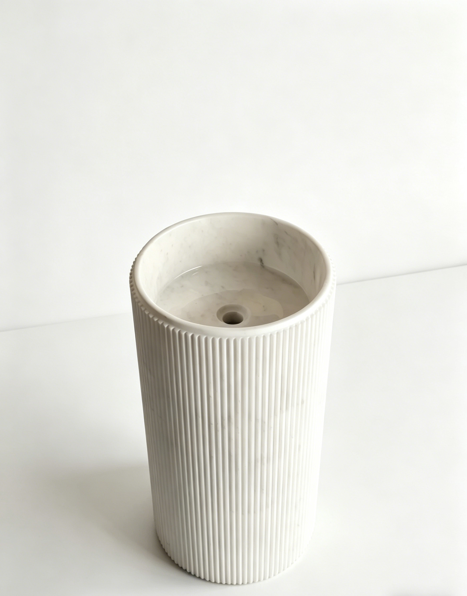
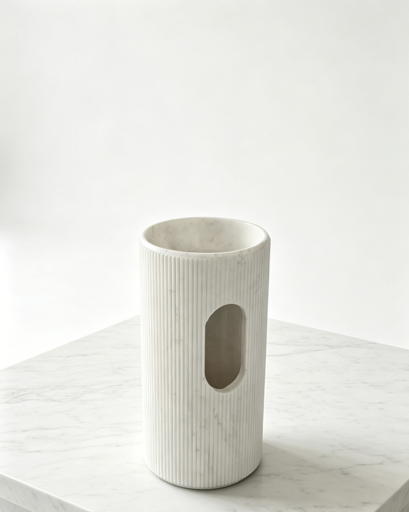
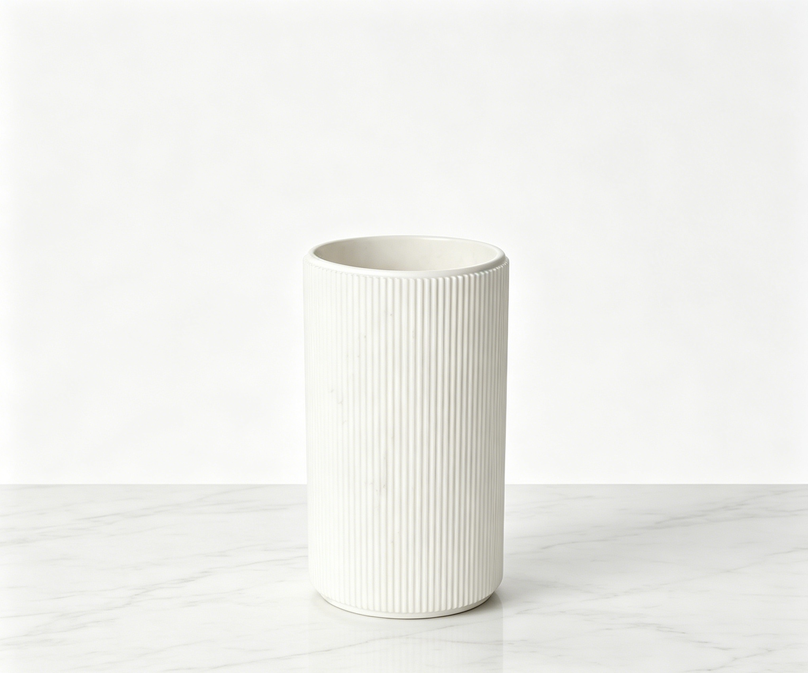
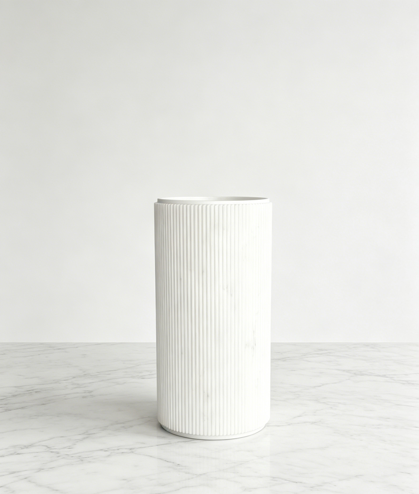
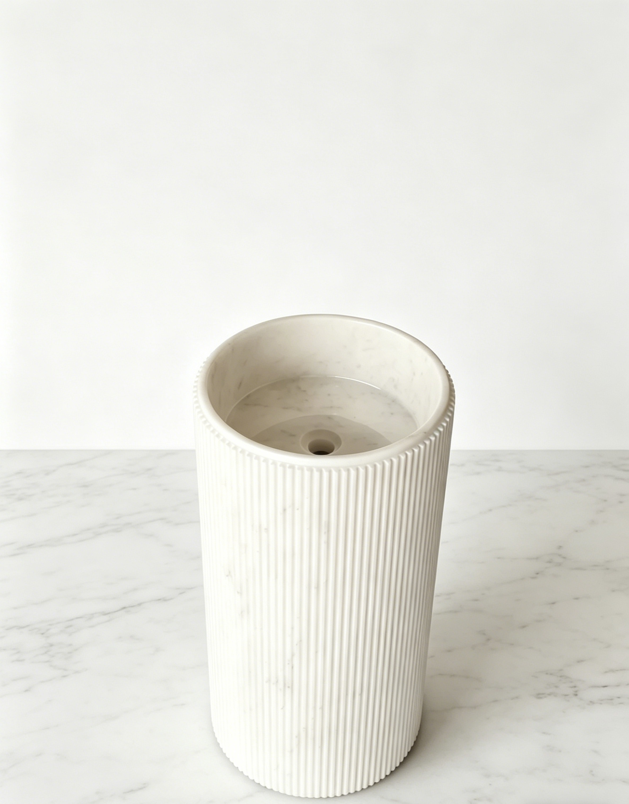

Back to products
MaterialNatural White Marble
FinishPolished, honed, or custom sealed finish
MOQ1 piece for sample or project order
Lead Time20-45 days after drawing and material confirmation
Fluted White Marble Sink
Fluted Rectangular White Marble Pedestal Sink
A fluted rectangular white marble pedestal sink designed for luxury bathrooms, villas, hotels, and high-end interior projects.
Send your target size, quantity, finish, and reference photo or drawing for factory review.
Product Overview
Built around your drawing, material, and market requirement.
This fluted rectangular white marble pedestal sink combines a clean rectangular form with vertical ribbed stone detail. Size, basin depth, fluting style, drain position, faucet hole, finish, and export packing can be customized before production.
MaterialNatural White Marble
UsageLuxury Bathroom, Hotel, Villa, Interior Project
FinishPolished, honed, or custom sealed finish
MOQ1 piece for sample or project order
Lead Time20-45 days after drawing and material confirmation
Applications
Where buyers typically use this product.
Use these directions to match the product to your collection, project type, or target market before requesting a quote.
Custom Options
Tell us what you need to change before production starts.
Most buyers confirm size, finish, structure, and packing first. Use this section to identify the details you want quoted or adjusted.
- Custom pedestal sink height, width, and basin depth
- Fluted or ribbed surface detail customization
- Polished, honed, or sealed white marble finish
- Drain position, faucet hole, and installation detail confirmation
- Reinforced export wooden crate packing
Buyer Questions
Common questions before ordering custom stone products.
These are the questions buyers usually ask before moving from reference stage to quote confirmation and production review.
Can the fluted rectangular marble sink size be customized?
Yes. We can customize the height, width, basin depth, drain position, and faucet hole according to your drawing or reference photo.
Can the fluted surface detail be adjusted?
Yes. The ribbed detail can be discussed before production, including spacing, depth, and overall visual direction.
Is this white marble pedestal sink suitable for overseas delivery?
Yes. We use protective inner packing and reinforced export wooden crates for international natural stone sink delivery.